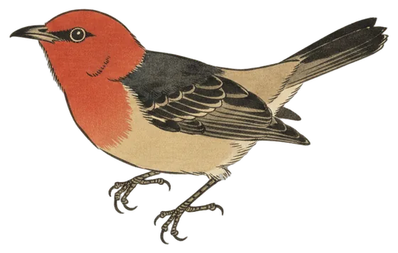

Record day
Big day for the Scarlet Honeyeater
Heard three times, among 14 species at the station in the last 24 hours.

The Scarlet Honeyeater (Myzomela sanguinolenta) was heard three times in the 24 hours to 9:30 pm, first at 3:11 pm and last at 5:05 pm. Its clearest call scored 90% confidence.
That beats its previous best of one call in a day. It has now been heard on five days of the station's 69. BirdNET's range model rates it one of the scarcer birds in the Canberra region.
- Calls
- 3
- First heard
- 3:11 pm
- Best call
- 90%
- Days heard
- 5 of 69